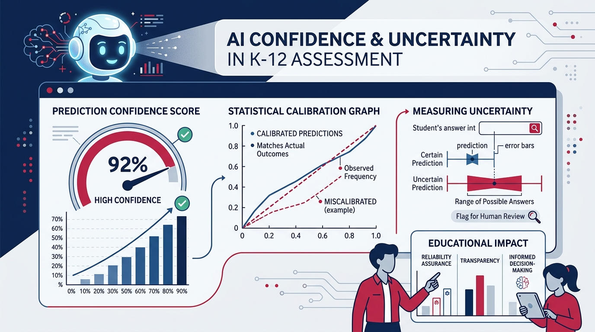

The Trouble With AI's Confidence Scores
Why asking LLMs how sure they are isn't a simple one-size-fits-all fix for district trust — and how model size fundamentally changes the prompt recipe.

“Asking an AI how sure it is may be one of the simplest, cheapest ways proposed to add a trust signal to chatbot answers — but the reliability of these scores strongly depends on how the model is asked.”
School administrators are increasingly adopting LLM-based chat systems to streamline district operations and classroom planning, but they face a critical roadblock. A significant deficiency of LLM-based chat systems compared to traditional ways of browsing the Internet is the lack of trust indicators or human verification. Without clear signals of reliability, education leaders are left guessing whether the AI's output is factually grounded or confidently incorrect. Making matters worse, as RaiseMark has previously documented in our analysis of LLM sycophancy, language models systematically tell users what they want to hear.
A Simple Fix With Mixed Results
A May 2026 paper from a team led by Daniel Yang tested a simple fix: asking the model to state a numeric confidence score alongside its answer.1 Across 10 datasets, 11 models, and 17 different ways of phrasing that request, the results were mixed. As the authors put it, “the reliability of these scores strongly depends on how the model is asked.”
This matters because asking an AI how sure it is may be one of the simplest, cheapest ways being proposed to add a trust signal to chatbot answers — no added infrastructure, no separate verification model, just a different question in the prompt. If that simple approach only works reliably under specific conditions, any organization leaning on it needs to know what those conditions are, rather than assuming a stated confidence number means what it appears to mean.
Calibration, Informativeness, and Meaningfulness
In developing a reliability score, the researchers emphasized three high-level criteria: calibration, informativeness, and meaningfulness. They found that overconfidence was "present for LLMs of all sizes, although the confidence tends to drop beyond a certain model capacity for some LLM families." The authors nonetheless found that “it is possible to extract well-calibrated confidence scores with certain prompt methods.”
Why Model Size Changes the Recipe
For a district experimenting with AI across classrooms and administration, the finding worth sitting with is that model size changes the answer. The researchers grouped models into two rough tiers:
| Model Size Tier | Parameter Range / Examples | Best Prompting Strategy | Observed Result |
|---|---|---|---|
| Smaller Tier | 7B to 8B parameters | Plain, simple, direct confidence prompts | Elaborate justifications or worked examples made scores less reliable. |
| Larger Tier | 32B+ parameters (including GPT-4o) | Detailed score explanations + worked examples | Brought stated confidence to within ~7% of actual accuracy. |
Smaller models, in the roughly 7- to 8-billion-parameter range, performed best with plain, simple confidence prompts. Asking them for a more elaborate justification, or giving them several worked examples, actually made their confidence scores less reliable.
Larger models, 32 billion parameters and up, including GPT-4o, moved in the opposite direction. Those LLM systems did best with a more detailed explanation of what the confidence score should mean, combined with a few worked examples. That combined approach brought large models' stated confidence to within roughly 7 percent of their actual accuracy.
Embedding Calibrated Prompts in Practice
The practical takeaway is that one generic instruction — “give me a confidence score with your answer” — will not serve every tool in a district's portfolio equally well. A lightweight classroom chatbot running on a smaller model needs different handling than a district-level assistant running on a frontier model. Sadly, the line between “tiny” and “large” in the study is not gradual: it jumps from 7–8 billion parameters straight to 32 billion, with nothing tested in between, so readers are left to sort out what works best in the middle.
In practice, the kind of confidence ranking tested in the paper is part of a background instruction provided to the LLM by way of a markdown file or system prompt. Users can embed these calibrated prompts directly into the backend environment before a teacher or staff member ever types a query. By mapping the complexity of the system prompt to the size of the AI model, users (or their IT departments) can automatically append reliable confidence scores to everyday generative tasks.
What District Leaders Must Ask Next
As your district evaluates new AI tools, are you simply accepting the generative outputs at face value, or are you demanding that the system quantify its own certainty before it reaches your staff? If so, is that self-assessment reliable?
After all, the only thing worse than no reliability assessment by the LLM is high confidence regarding an erroneous output. As demonstrated in our research on AI cognitive biases and metacognitive failure, uncalibrated models actively reinforce flawed reasoning. The Yang paper suggests it is worth knowing what that background reliability prompt requires because these details matter. For districts evaluating classroom AI prompts and deployment guidelines, our Policy Check-Up provides immediate policy alignment.
Explore related briefings on model reliability, cognitive biases, and administrative safeguards:
- The Echo Chamber: LLM Sycophancy & Flawed Verification — How frontier models validate incorrect user assumptions rather than challenging errors.
- The Lying Mirror: AI Cognitive Biases & Metacognition — Examining systemic blind spots when AI evaluates its own accuracy.
- AI 360 Review — Comprehensive institutional audit evaluating model verification and policy safeguards.
Notes & Sources
- Daniel Yang, Yao-Hung Hubert Tsai, and Makoto Yamada, “On Verbalized Confidence Scores for LLMs,” arXiv:2412.14737v2, revised May 5, 2026. https://arxiv.org/html/2412.14737v2